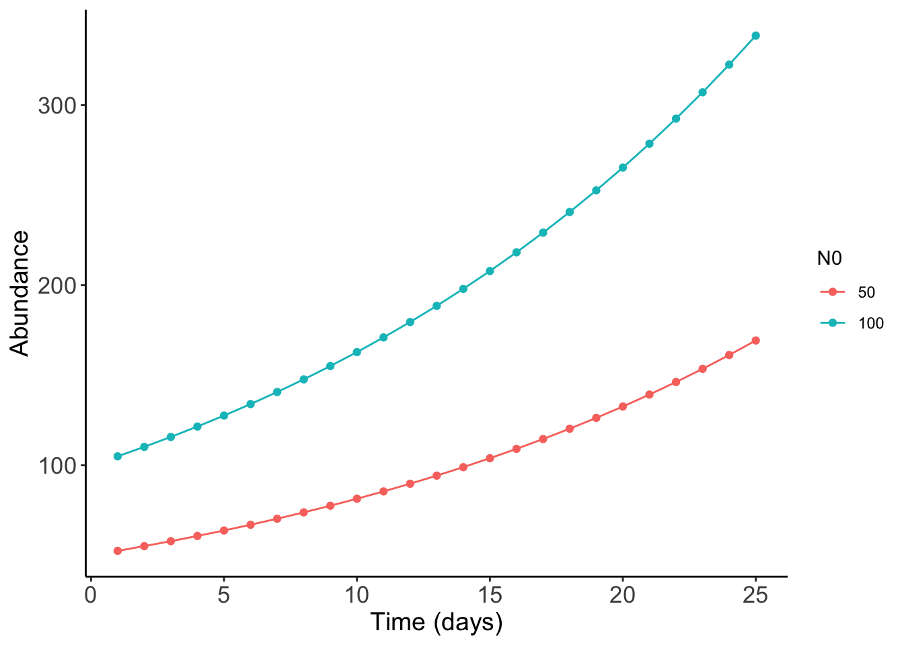

pop_Growth<- function(time, b, d, N0){
}4 How does a population grow?
4.1 Hello (silicon) world!
For our first foray into mathematical modeling, let’s start with the model: how does the size of a population change over time? Assume we’re observing a population on an isolated island, \(N\) (which stands for the number of individuals), and we must think of the time scale, \(t\). For fast-growing organisms like bacteria, it would make more sense to observe the population over the span of hours, as they grow rapidly. It would be unwise, however, to use hours for a slow-growing oak tree. For this population of interest, let us assume a daily time step.
The size of the population increases due to new individuals from births or immigration. Likewise, the population decreases due to deaths or from emigration. For simplicity, let’s assume that there are only births and deaths. Mathematically, we can describe the population as: \[ N_{t+1} = N_t + Births - Deaths. \]
This model assumes discrete time steps where the total population size is the next-time step (\(t+1\)) is just the sum of the current timestep (\(t\)) with the addition and removal of individuals.
4.2 The nature of births and deaths
Intuitively, we would imagine that the larger a population is, the more births there would be. So it makes sense that the total number of births would depend on the current population size:
\[ Births = b N_t, \]
where \(b\) is the daily per-capita birth rate, or the number of births per individual in the population per unit-time. For example, if \(b = 0.10\), it would say that each individual should produce 0.10 of an individual. In a population of 100 individuals, 10 new individuals should then be born. This intuition works similarly for deaths: the more individuals there are in a population, the more deaths will occur. Similarly,
\[ Deaths = d N_t, \]
and \(d\) describes the daily per-capita death rate. All together, our model of population growth looks like this:
\[ \begin{aligned} N_{t+1} &= N_t + bN_t - dN_t \\ &= N_t(1 + b - d). \end{aligned} \]
Because \(b\) and \(d\) are in the same units, we can combine them as \(r = b - d\) with \(r\) being called the geometric rate of increase. What happens if \(r = 0\)? That means \(b = d\), so the number of births and deaths is equal, and the population size does not change. If \(r > 0\), then there are more births than deaths, and the population will increase. Likewise, if \(r < 0\), there are more deaths than births, so the population will decrease. Thus, our final model is:
\[ N_{t+1} = N_t(1 + r), \]
and we find that as
\[ \frac{N_{t+1}}{N_t} = (1+r), \]
meaning that \((1+r)\) describes how the population change.
Finite rate of increase
The term \((1+r)\) also has a name called the finite rate of increase. Usually it is replaced by \(\lambda\) and so the above model is usually seen as \(N_{t+1} = \lambda N_t\)
4.3 What does the future hold?
The above equation is perfect for when we want to determine the population size at the next time-step. But if we want to start at the initial time point, then it would be as follows:
\[ N_{t} = N_0(1+r)^t, \]
where \(N_0\) (pronounced N-naught) is the initial population size.
How to generalize
Starting from the initial time (\(t=0\)), the next time step would be:
\[ N_1 = N_0(1+r), \]
and for \(t=2\) it would be:
\[ \begin{aligned} N_2 &= N_1(1+r) \\ &= N_0(1+r)(1 + r) \\ & = N_0(1+r)^2. \end{aligned} \]
Try doing it for \(t=3\)!
4.4 How to code it?
For coding these types of models, we should use functions. As a rule of thumb, the input for these functions should include the parameters, as these can vary. Think of all the things that could be changed in the mathematical model. So let’s look at this function skeleton here, which I call pop_Growth. Generally, simulations of populations involve time (how long you run them for), the parameters of interest, and the initial population size. Here is the skeleton below:
Now we have the model equation: \(N_t = N_0 (1+r)^t\). What is the output that we want for this function? At each timestep, we should have the population size. While most mathematical modeling books don’t take into account of this Also, generally when we’re running mathematical simulations, you’ll be running the model for multiple combinations of parameters. It’s good to afix the parameter value that you’re looking at as an output. Because of the iterative nature of the above model, it would make sense to use for-loops but the problem is that they are computationally intensive. Thankfully, we can use the inherent capability of R for vectorization in which a function will run on each element of a vector at the same time.
A simple example of vectorization
Vectorization means that the operation are applied to the entire vector:
x = seq(1,5)
print(x * 5)[1] 5 10 15 20 25pop_Growth <- function(time, b, d, N0){
time_step <- seq(1,time)
r = b - d
N = N0*(1+r)^(time_step)
return(data.frame(time_step,N, b,d, N0))
}You see now that the output is a data.frame that will have the same number of rows equal to time, the population size at the time, as well as the three parameters: birth rate, death rate, and the initial population size. Now let’s try running it:
popGrowth_df <- pop_Growth(time = 25, b = 0.5, d= 0.1, N0 = 100)
head(popGrowth_df, 10) time_step N b d N0
1 1 140.0000 0.5 0.1 100
2 2 196.0000 0.5 0.1 100
3 3 274.4000 0.5 0.1 100
4 4 384.1600 0.5 0.1 100
5 5 537.8240 0.5 0.1 100
6 6 752.9536 0.5 0.1 100
7 7 1054.1350 0.5 0.1 100
8 8 1475.7891 0.5 0.1 100
9 9 2066.1047 0.5 0.1 100
10 10 2892.5465 0.5 0.1 100Congratulations, you ran your first model!
4.5 The power of simulation
The power of simulation is that we can explore different parameter combinations. This allows us to examine models across the entire parameter space, which is important because the dynamics can change depending on the parameters we choose. One way to achieve this is by using a handy function called expand.grid, which allows us to generate all possible combinations of parameters.
param_grid <- expand.grid(
b = c(0.1, 0.2),
d = c(0.05, 0.1),
N0 = c(50, 100)
)
param_grid b d N0
1 0.1 0.05 50
2 0.2 0.05 50
3 0.1 0.10 50
4 0.2 0.10 50
5 0.1 0.05 100
6 0.2 0.05 100
7 0.1 0.10 100
8 0.2 0.10 100You can see that this is all possible combinations of \(b\), \(d\), and \(N_0\) that represent different scenarios. For the first row, for example, this means that the death rate is much higher than the birth rate, and the initial population size is 50. We can compare this to a scenario where the birth rate is higher than the death rate, with the same initial population size.
To run multiple simulations, we use the lapply function:
results <- do.call(
rbind,
lapply(
split(param_grid, seq(nrow(param_grid))),
function(p) pop_Growth(25, p$b, p$d, p$N0)
)
)4.6 Plotting it out
Plotting out mathematical simulations can be difficult because of the large number of parameter space that we are looking at. So it is important to have a reason. For example, what if we were interested in only how the initial population changes? Then for direct comparision, we would try to keep the other parameters consistent, so let’s subset the data that we need
results_subset <- subset(results, results$b == 0.10 & results$d == 0.05)We should have two rows in this data and when we plot it out, we can see that with a greater population size is able to grow faster.
ggplot(results_subset, aes(x = time_step, y = N, group = as.factor(N0), color = as.factor(N0))) +
geom_point() +
geom_line()+
xlab("Time (days)") +
ylab("Abundance") +
labs(color = "N0") +
theme_classic() +
theme(axis.text = element_text(size = 13),
axis.title = element_text(size = 14))